Appendix B — Visualization
Data visualization will inevitably shape interpretation and motivate the next steps of the analysis. A variety of visualization methods are available for microbiome analysis but the application requires careful attention to details. Knowledge on the available tools and their limitations plays an important role in selecting the most suitable methods to address a given question.
This chapter introduces the reader to a number of visualization techniques found in this book, such as:
- barplots
- boxplots
- heatmaps
- ordination charts
- regression charts
- trees
The toolkit which provides the essential plotting functionality includes the following packages:
- patchwork, cowplot, ggpubr and gridExtra: plot layouts and multi-panel plotting
-
miaViz: specific visualization tools for
TreeSummaizedExperimentobjects -
scater: specific visualization tools for
SingleCellExperimentobjects - ggplot2, ComplexHeatmap, ggtree, sechm: composition heatmaps
- ANCOMBC, ALDEx2 and Maaslin2: visual differential abundance
- fido: tree-based methods for differential abundance
- plotly: animated and 3D plotting
For systematic and extensive tutorials on the visual tools available in mia, readers can refer to the following material:
B.1 Pre-analysis exploration
B.1.1 Accessing row and column data
SCE and TreeSE objects contain multiple layers of information in the form of rows, columns and meta data. The scater package supports in accessing, modifying and graphing the meta data related to features as well as samples.
Such meta data can be directly plotted with the functions plotRowData and plotColData.
# obtain QC data
tse <- addPerCellQC(tse)
tse <- addPerFeatureQC(tse)
# plot QC Mean against Species
plotRowData(tse, "mean", "Species") +
theme(axis.text.x = element_blank()) +
labs(x = "Species", y = "QC Mean")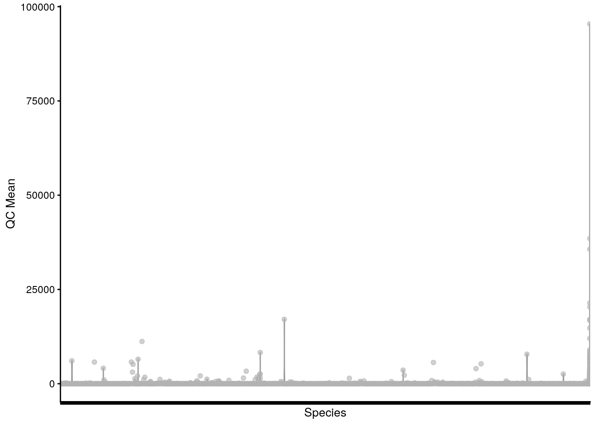
# plot QC Sum against Sample ID, colour-labeled by Sample Type
plotColData(tse, "sum", "X.SampleID", colour_by = "SampleType") +
theme(axis.text.x = element_text(angle = 45, hjust = 1)) +
labs(x = "Sample ID", y = "QC Sum")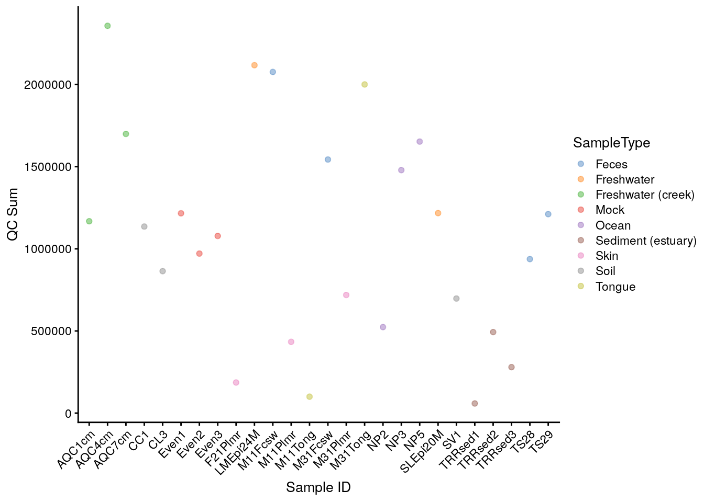
Alternatively, they can be converted to a data.frame object and passed to ggplot.
# store colData into a data frame
# plot Number of Samples against Sampling Site
ggplot(colData(tse), aes(x = SampleType)) +
geom_bar(width = 0.5) +
theme(axis.text.x = element_text(angle = 45, hjust = 1)) +
labs(
x = "Sampling Site",
y = "Number of Samples")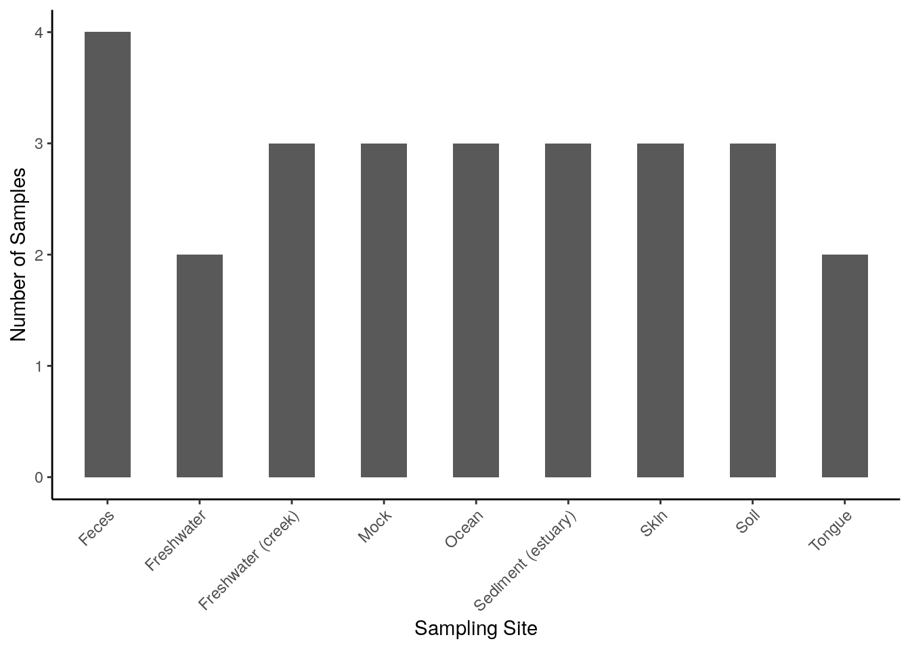
Further methods of application can be found in the chapters Section 10.3 and in a few external tutorials with open data. Additionally, rowData and colData allow manipulation and subsetting of large data sets into smaller units, as explained in chapter Chapter 9.
B.1.2 Viewing abundance and prevalence patterns
Prior-to-analysis exploration may involve questions such as how microorganisms are distributed across samples (abundance) and what microorganisms are present in most of the samples (prevalence). The information on abundance and prevalence can be summarized into a jitter or density plot and a tree, respectively, with the miaViz package.
Specifically, the functions plotAbundance, plotAbundanceDensity and plotRowTree are used, and examples on their usage are discussed throughout chapter Chapter 10.
B.2 Diversity estimation
Alpha diversity is commonly measured as one of the diversity indices explained in chapter Chapter 12. Because the focus lies on each sample separately, one-dimensional plots, such as scatter, violin and box plots, are suitable.
Beta diversity is generally evaluated as one of the dissimilarity indices reported in chapter Chapter 13. Unlike alpha diversity, samples are compared collectively to estimate the heterogeneity across them, therefore multidimensional plots, such as Shepard and ordination plots are suitable.
| alpha diversity | beta diversity | |
|---|---|---|
| used metrics | diversity indices | dissimilarity indices |
| metric dimensionality | one-dimensional | multidimensional |
| suitable visualization | scatter, violin, box plots | Shepard, ordination plots |
In conclusion, visualization techniques for alpha and beta diversity significantly differ from one another.
B.2.1 Alpha diversity with scatter, violin and box plots
The basic method to visualize the diversity values assigned to the different samples in a TSE object includes the following, where each data point represents one sample:
# estimate shannon diversity index
tse <- addAlpha(tse, assay.type = "counts", index = c("shannon", "faith"))
# plot shannon diversity index, colour-labeled by Sample Type
plotColData(tse, "shannon", colour_by = "SampleType")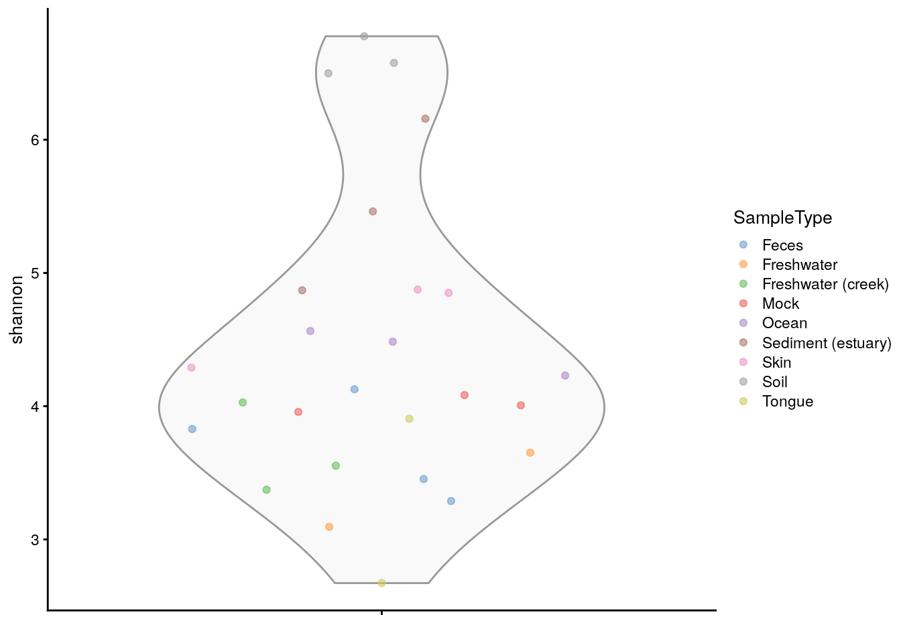
The several indices available for the evaluation of alpha diversity often return slightly divergent results, which can be visually compared with a multiple violin or box plot. For this purpose, plotColData (for violin plots) or ggplot (for box plots) are recursively applied to a number of diversity indices with the function lapply and the multi-panel plotting functionality of the patchwork package is then exploited.
# generate plots for shannon and faith indices
# and store them into a list
plots <- lapply(
c("shannon", "faith"), function(i)
ggplot(colData(tse), aes_string(y = i)) +
geom_boxplot() +
theme(
axis.text.x = element_blank(),
axis.ticks.x = element_blank())
)
# combine plots with patchwork
plots[[1]] + plots[[2]]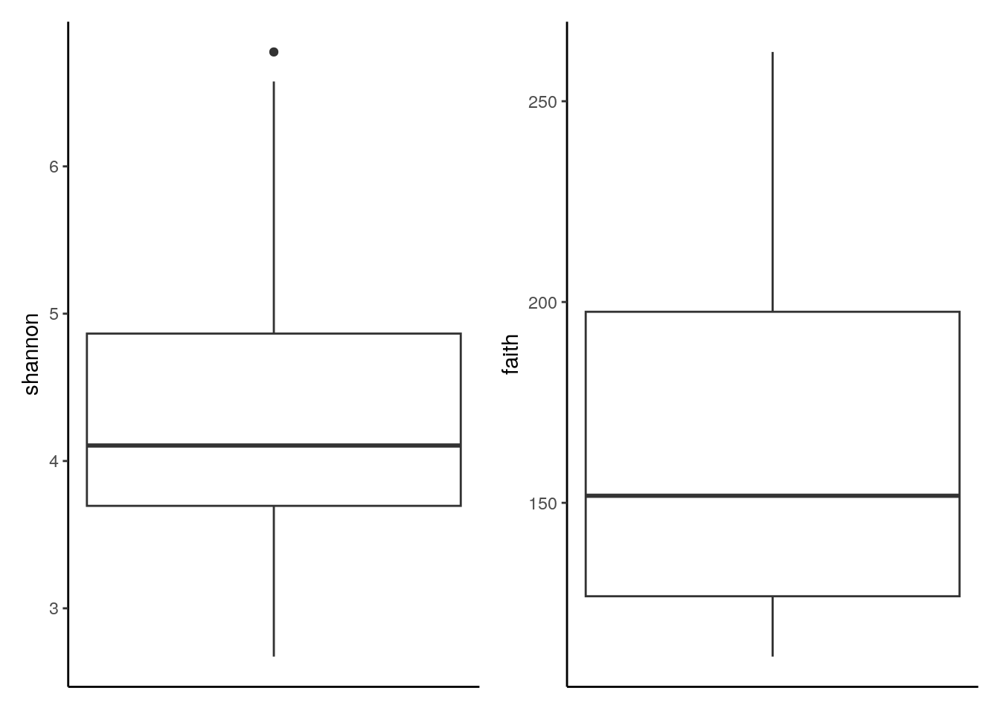
The analogous output in the form of a violin plot is obtained in chapter Section 12.1.2. In addition, box plots that group samples according to certain information, such as origin, sex, age and health condition, can be labeled with p-values for significant differences with the package ggsignif package, as shown in chapter Chapter 12.
B.2.2 Beta diversity with Shepard and coordination plots
The scater package offers the general function plotReducedDim. In its basic form, it takes a TSE object and the results on sample similarity stored in the same object, which can be evaluated with the following coordination methods:
runMDSrunNMDSrunPCArunTSNErunUMAP
Since these clustering techniques allow for multiple coordinates or components, coordination plots can also span multiple dimensions, which is explained in chapter Appendix A.
# perform NMDS coordination method
tse <- runNMDS(tse, FUN = vegan::vegdist, name = "NMDS")
## initial value 47.733208
## iter 5 value 33.853364
## iter 10 value 32.891200
## final value 32.823570
## converged
# plot results of a 2-component NMDS on tse,
# coloured-scaled by shannon diversity index
plotReducedDim(tse, "NMDS", colour_by = "shannon")
Multiple combinations of coordinates or dimensions can also be integrated into a multi-panel arrangement.
# perform MDS coordination method
tse <- runMDS(
tse,
FUN = vegan::vegdist,
method = "bray",
name = "MDS",
assay.type = "counts",
ncomponents = 3)
# plot results of a 3-component MDS on tse,
# coloured-scaled by faith diversity index
plotReducedDim(tse, "MDS", ncomponents = c(1:3), colour_by = "faith")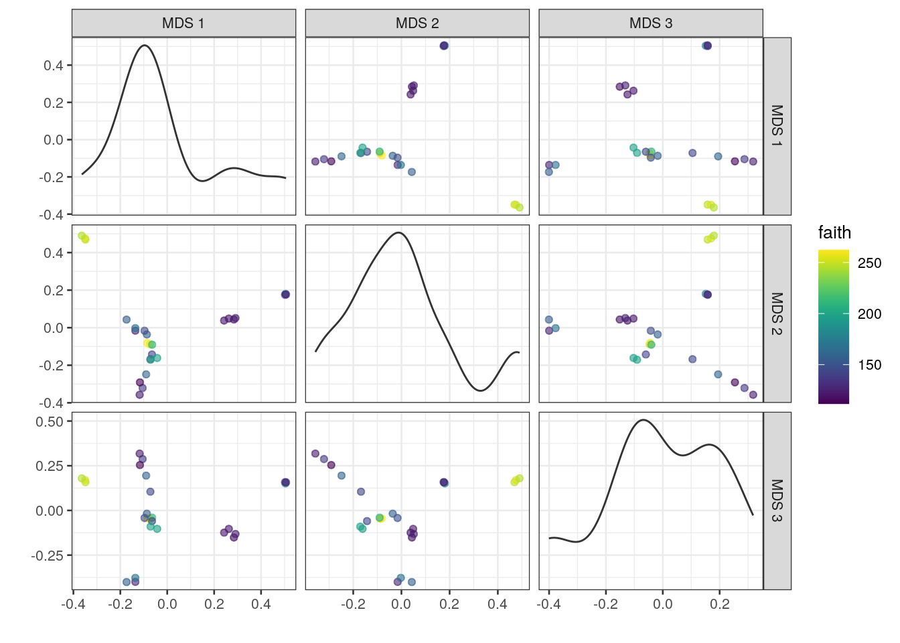
Similarly to iterating plotColData over indices of alpha diversity, lapply can be used in combination with patchwork to recursively apply plotReducedDim and visually compare results among various coordination methods.
# generate plots for MDS and NMDS methods
# and store them into a list
plots <- lapply(
c("MDS", "NMDS"),
plotReducedDim,
object = tse,
colour_by = "shannon")
# combine plots with patchwork
plots[[1]] + plots[[2]] +
plot_layout(guides = "collect")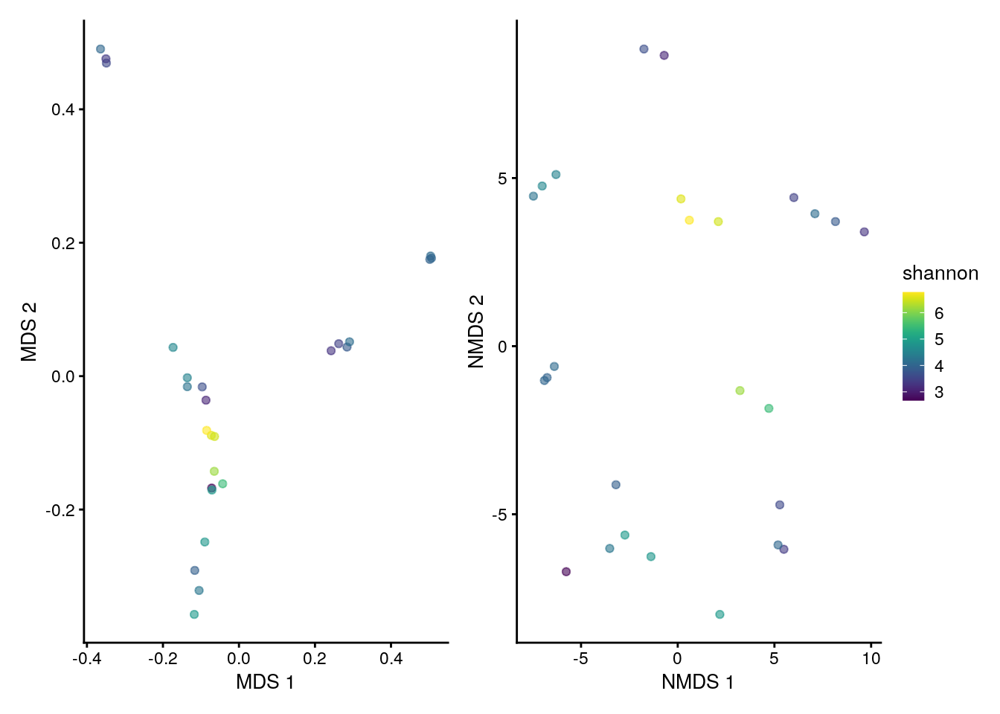
For similar examples, readers are referred to chapter Chapter 13. Further material on the graphic capabilities of patchwork is available in its official package tutorial.
B.3 Statistical analysis
B.3.1 Heatmaps
As described in chapter Chapter 11, bar plots and heatmaps can offer a useful insight into the composition of a community. Simple methods involve the functions plotAbundance and geom_tile in combination with scale_fill_gradientn from the packages miaViz and ggplot2, respectively.
For instance, below the composition of multiple samples (x axis) is reported in terms of relative abundances (y axis) for the top 10 taxa at the Order rank. Bar plots and heatmaps with analogous information at the Phylum level are available in the aforementioned chapter.
# agglomerate tse by Order
tse_order <- agglomerateByRank(tse, rank = "Order")
# transform counts into relative abundance
tse_order <- transformAssay(
tse_order, assay.type = "counts", method = "relabundance")
# get top orders
top_taxa <- getTop(tse_order, top = 10)
# leave only names for top 10 orders and label the rest with "Other"
order_renamed <- lapply(
rowData(tse_order)$Order,
function(x){if (x %in% top_taxa) {x} else {"Other"}})
rowData(tse_order)$Order <- as.character(order_renamed)
# plot composition as a bar plot
plotAbundance(
tse_order,
assay.type = "relabundance",
rank = "Order",
order.row.by = "abund",
order.col.by = "Clostridiales")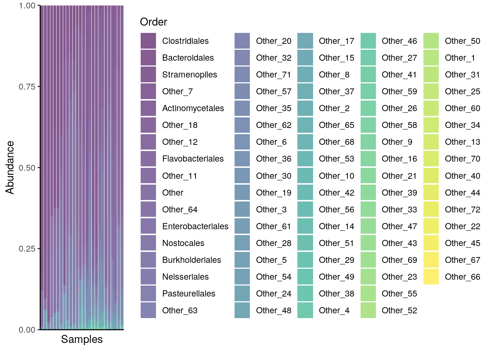
To add a sample annotation, you can combine plots that you get from the output of plotAbundance.
# Create plots
plots <- plotAbundance(
tse_order,
assay.type = "relabundance",
rank = "Order",
order.row.by = "abund",
order.col.by = "Clostridiales",
features = "SampleType")
# Modify the legend of the first plot to be smaller
plots[[1]] <- plots[[1]] +
theme(
legend.key.size = unit(0.3, 'cm'),
legend.text = element_text(size = 6),
legend.title = element_text(size = 8))
# Modify the legend of the second plot to be smaller
plots[[2]] <- plots[[2]] +
theme(
legend.key.height = unit(0.3, 'cm'),
legend.key.width = unit(0.3, 'cm'),
legend.text = element_text(size = 6),
legend.title = element_text(size = 8),
legend.direction = "vertical")
# Load required packages
library(ggpubr)
library(patchwork)
# Combine legends
legend <- wrap_plots(
as_ggplot(get_legend(plots[[1]])),
as_ggplot(get_legend(plots[[2]])),
ncol = 1)
# Removes legends from the plots
plots[[1]] <- plots[[1]] + theme(legend.position = "none")
plots[[2]] <- plots[[2]] +
theme(legend.position = "none", axis.title.x=element_blank())
# Combine plots
plot <- wrap_plots(plots[[2]], plots[[1]], ncol = 1, heights = c(2, 10))
# Combine the plot with the legend
wrap_plots(plot, legend, nrow = 1, widths = c(2, 1))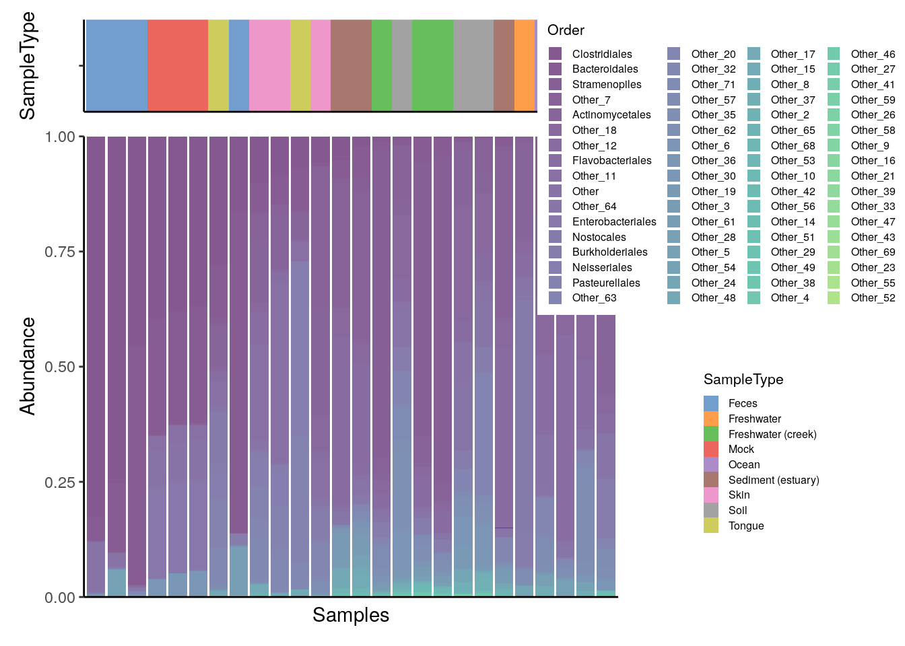
For more sophisticated visualizations than those produced with plotAbundance and ggplot2, the packages pheatmap and sechm provide methods to include feature and sample clusters in a heatmap, along with further functionality.
# Agglomerate tse by phylum
tse_phylum <- agglomerateByRank(tse, rank = "Phylum")
# Add clr-transformation on samples
tse_phylum <- transformAssay(
tse_phylum, MARGIN = "cols", method = "clr", assay.type = "counts",
pseudocount = 1)
# Add standardize-transformation on features (taxa)
tse_phylum <- transformAssay(
tse_phylum, assay.type = "clr", MARGIN = "rows",
method = "standardize", name = "clr_z")
# Take subset: only samples from feces, skin, or tongue
tse_phylum_subset <- tse_phylum[
, tse_phylum$SampleType %in% c("Feces", "Skin", "Tongue") ]
# Add clr-transformation
tse_phylum_subset <- transformAssay(
tse_phylum_subset, method = "clr", MARGIN="cols",
assay.type = "counts", pseudocount = 1)
# Does standardize-transformation
tse_phylum_subset <- transformAssay(
tse_phylum_subset, assay.type = "clr", MARGIN = "rows",
method = "standardize", name = "clr_z")
# Get n most abundant taxa, and subsets the data by them
top_taxa <- getTop(tse_phylum_subset, top = 20)
tse_phylum_subset <- tse_phylum_subset[top_taxa, ]
# Gets the assay table
mat <- assay(tse_phylum_subset, "clr_z")
# Creates the heatmap
pheatmap(mat)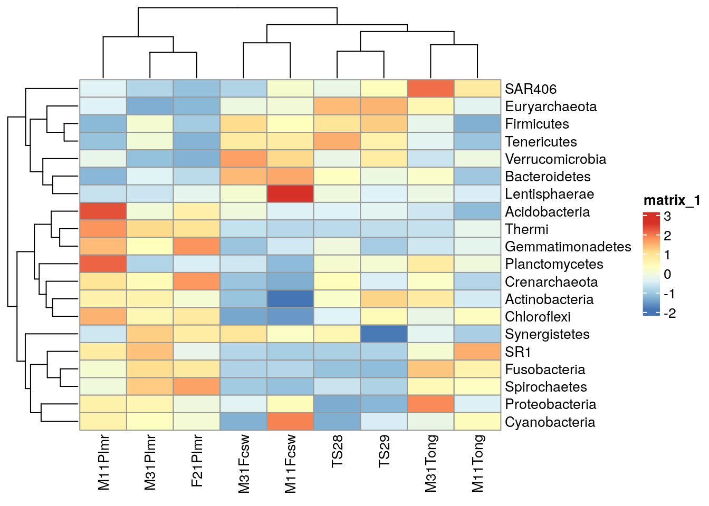
We can cluster both samples and features hierarchically and add them to the x and y axes of the heatmap, respectively.
# Hierarchical clustering
taxa_hclust <- hclust(dist(mat), method = "complete")
# Creates a phylogenetic tree
taxa_tree <- as.phylo(taxa_hclust)
# Plot taxa tree
taxa_tree <- ggtree(taxa_tree) +
theme(plot.margin=margin(0,0,0,0)) # removes margins
# Get order of taxa in plot
taxa_ordered <- get_taxa_name(taxa_tree)
# to view the tree, run
# taxa_treeBased on phylo tree, we decide to create three clusters.
# Creates clusters
taxa_clusters <- cutree(tree = taxa_hclust, k = 3)
# Converts into data frame
taxa_clusters <- data.frame(clusters = taxa_clusters)
taxa_clusters$clusters <- factor(taxa_clusters$clusters)
# Order data so that it's same as in phylo tree
taxa_clusters <- taxa_clusters[taxa_ordered, , drop = FALSE]
# Prints taxa and their clusters
taxa_clusters
## clusters
## Chloroflexi 3
## Actinobacteria 3
## Crenarchaeota 3
## Planctomycetes 3
## Gemmatimonadetes 3
## Thermi 3
## Acidobacteria 3
## Spirochaetes 2
## Fusobacteria 2
## SR1 2
## Cyanobacteria 2
## Proteobacteria 2
## Synergistetes 2
## Lentisphaerae 1
## Bacteroidetes 1
## Verrucomicrobia 1
## Tenericutes 1
## Firmicutes 1
## Euryarchaeota 1
## SAR406 1The information on the clusters is then added to the feature meta data.
Similarly, samples are hierarchically grouped into clusters, the most suitable number of clusters for the plot is selected and the new information is stored into the sample meta data.
# Hierarchical clustering
sample_hclust <- hclust(dist(t(mat)), method = "complete")
# Creates a phylogenetic tree
sample_tree <- as.phylo(sample_hclust)
# Plot sample tree
sample_tree <- ggtree(sample_tree) + layout_dendrogram() +
theme(plot.margin=margin(0,0,0,0)) # removes margins
# Get order of samples in plot
samples_ordered <- rev(get_taxa_name(sample_tree))
# to view the tree, run
# sample_tree
# Creates clusters
sample_clusters <- factor(cutree(tree = sample_hclust, k = 3))
# Converts into data frame
sample_data <- data.frame(clusters = sample_clusters)
# Order data so that it's same as in phylo tree
sample_data <- sample_data[samples_ordered, , drop = FALSE]
# Order data based on
tse_phylum_subset <- tse_phylum_subset[ , rownames(sample_data)]
# Add sample type data
sample_data$sample_types <- unfactor(colData(tse_phylum_subset)$SampleType)
sample_data
## clusters sample_types
## M11Plmr 2 Skin
## M31Plmr 2 Skin
## F21Plmr 2 Skin
## M31Fcsw 1 Feces
## M11Fcsw 1 Feces
## TS28 3 Feces
## TS29 3 Feces
## M31Tong 3 Tongue
## M11Tong 3 TongueNow we can create heatmap with additional annotations.
# Determines the scaling of colors
# Scale colors
breaks <- seq(-ceiling(max(abs(mat))), ceiling(max(abs(mat))),
length.out = ifelse( max(abs(mat))>5, 2*ceiling(max(abs(mat))), 10 ) )
colors <- colorRampPalette(c("darkblue", "blue", "white", "red", "darkred"))(length(breaks)-1)
pheatmap(
mat, annotation_row = taxa_clusters,
annotation_col = sample_data,
breaks = breaks,
color = colors)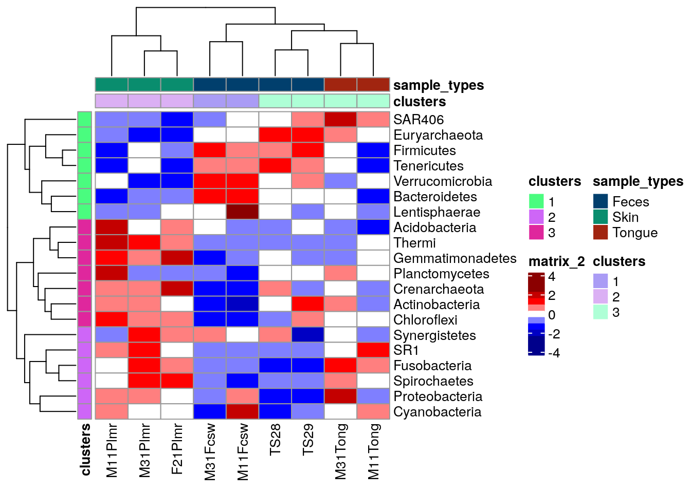
The package sechm allows for further visual capabilities and flexibility. In this case, the clustering step is automatically performed by the plotting function and does not need to be executed in advance.
# Stores annotation colros to metadata
metadata(tse_phylum_subset)$anno_colors$SampleType <- c(
Feces = "blue", Skin = "red", Tongue = "gray")
# Create a plot
sechm(
tse_phylum_subset,
features = rownames(tse_phylum_subset),
assayName = "clr",
do.scale = TRUE,
top_annotation = c("SampleType"),
gaps_at = "SampleType",
cluster_cols = TRUE, cluster_rows = TRUE)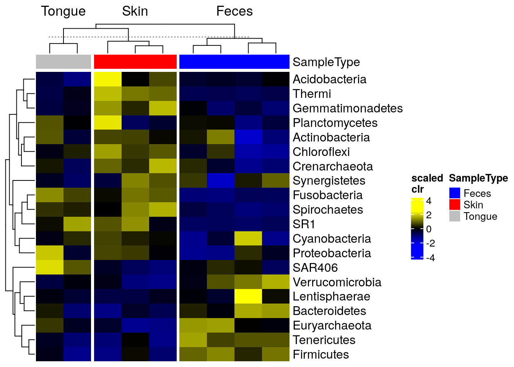
It is also possible to create an analogous heatmap by just using the ggplot2 package. However, a relatively long code is required to generate an identical output.
# Add feature names to column as a factor
taxa_clusters$Feature <- rownames(taxa_clusters)
taxa_clusters$Feature <- factor(taxa_clusters$Feature, levels = taxa_clusters$Feature)
# Create annotation plot
row_annotation <- ggplot(taxa_clusters) +
geom_tile(aes(x = NA, y = Feature, fill = clusters)) +
coord_equal(ratio = 1) +
theme(
axis.text.x = element_blank(),
axis.text.y = element_blank(),
axis.ticks.y = element_blank(),
axis.title.y = element_blank(),
axis.title.x = element_text(angle = 90, vjust = 0.5, hjust = 1),
plot.margin = margin(0, 0, 0, 0)
) +
labs(fill = "Clusters", x = "Clusters")
# Add sample names to one of the columns
sample_data$sample <- factor(
rownames(sample_data), levels = rownames(sample_data))
# Create annotation plot
sample_types_annotation <- ggplot(sample_data) +
scale_y_discrete(position = "right", expand = c(0,0)) +
geom_tile(aes(y = NA, x = sample, fill = sample_types)) +
coord_equal(ratio = 1) +
theme(
axis.text.x = element_blank(),
axis.text.y = element_blank(),
axis.title.x = element_blank(),
axis.ticks.x = element_blank(),
plot.margin = margin(0, 0, 0, 0),
axis.title.y.right = element_text(angle = 0, vjust = 0.5)
) +
labs(fill = "Sample types", y = "Sample types")
sample_clusters_annotation <- ggplot(sample_data) +
scale_y_discrete(position = "right", expand = c(0,0)) +
geom_tile(aes(y = NA, x = sample, fill = clusters)) +
coord_equal(ratio = 1) +
theme(
axis.text.x = element_blank(),
axis.text.y = element_blank(),
axis.title.x = element_blank(),
axis.ticks.x = element_blank(),
plot.margin = margin(0, 0, 0, 0),
axis.title.y.right = element_text(angle = 0, vjust = 0.5)
) +
labs(fill = "Clusters", y = "Clusters")
# Order data based on clusters and sample types
mat <- mat[unfactor(taxa_clusters$Feature), unfactor(sample_data$sample)]
# ggplot requires data in melted format
melted_mat <- melt(mat)
colnames(melted_mat) <- c("Taxa", "Sample", "clr_z")
# Determines the scaling of colors
maxval <- round(max(abs(melted_mat$clr_z)))
limits <- c(-maxval, maxval)
breaks <- seq(from = min(limits), to = max(limits), by = 0.5)
colours <- c("darkblue", "blue", "white", "red", "darkred")
heatmap <- ggplot(melted_mat) +
geom_tile(aes(x = Sample, y = Taxa, fill = clr_z)) +
theme(
axis.title.y = element_blank(),
axis.title.x = element_blank(),
axis.ticks.y = element_blank(),
axis.text.x = element_text(angle = 90, vjust = 0.5, hjust = 1),
plot.margin = margin(0, 0, 0, 0), # removes margins
legend.key.height = unit(1, 'cm')
) +
scale_fill_gradientn(
name = "CLR + Z transform",
breaks = breaks,
limits = limits,
colours = colours) +
scale_y_discrete(position = "right")
heatmap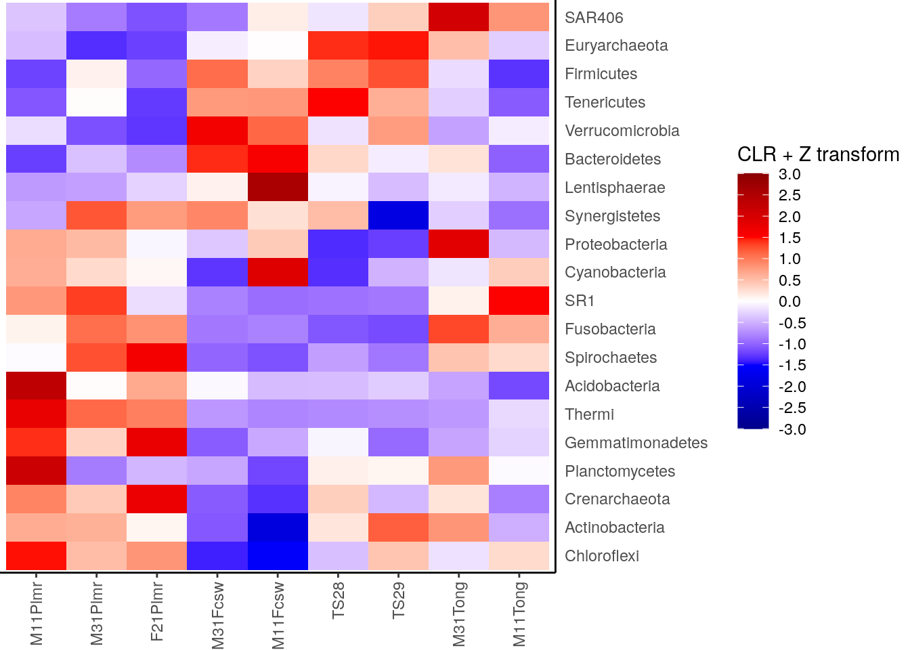
library(patchwork)
# Create layout
design <- c(
patchwork::area(3, 1, 4, 1),
patchwork::area(1, 2, 1, 3),
patchwork::area(2, 2, 2, 3),
patchwork::area(3, 2, 4, 3)
)
# to view the design, run
# plot(design)
# Combine plots
plot <- row_annotation +
sample_clusters_annotation +
sample_types_annotation +
heatmap +
plot_layout(
design = design, guides = "collect",
# Specify layout, collect legends
# Adjust widths and heights to align plots.
# When annotation plot is larger, it might not fit into
# its column/row.
# Then you need to make column/row larger.
# Relative widths and heights of each column and row:
# Currently, the width of the first column is 15 % and the height of
# first two rows are 30 % the size of others
# To get this work most of the times, you can adjust all sizes to be
# 1, i.e. equal, but then the gaps between plots are larger.
widths = c(0.15, 1, 1),
heights = c(0.3, 0.3, 1, 1))
plot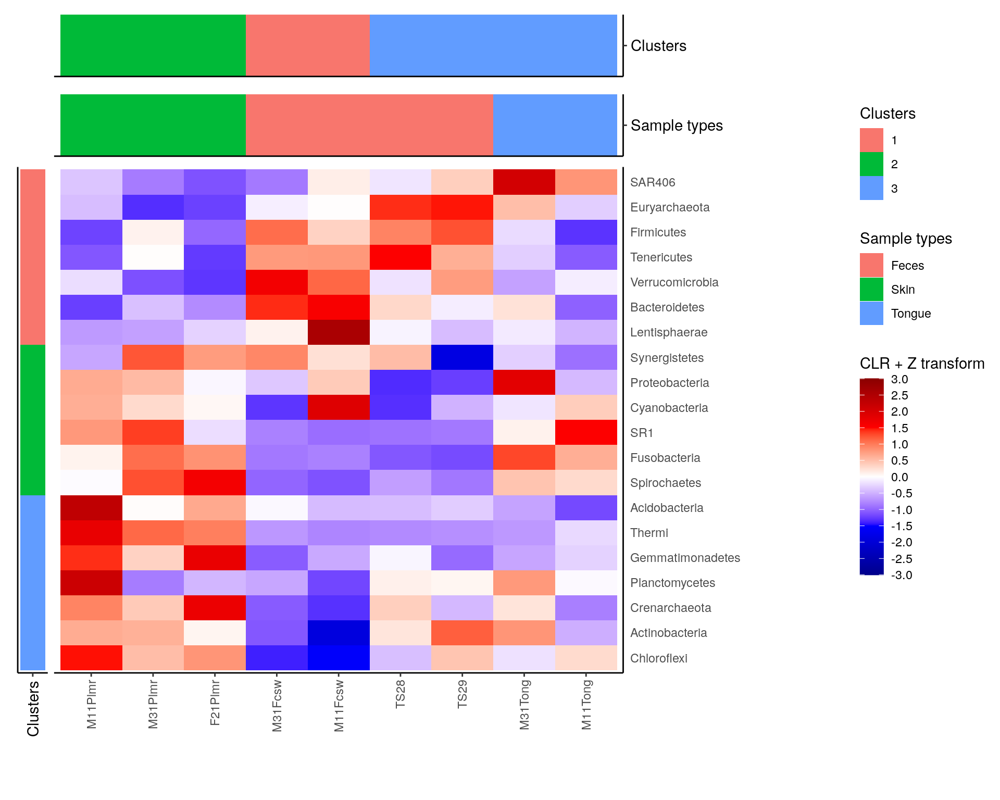
# Create layout
design <- c(
patchwork::area(4, 1, 5, 1),
patchwork::area(4, 2, 5, 2),
patchwork::area(1, 3, 1, 4),
patchwork::area(2, 3, 2, 4),
patchwork::area(3, 3, 3, 4),
patchwork::area(4, 3, 5, 4)
)
# to view the design, run
# plot(design)
# Combine plots
plot <- taxa_tree +
row_annotation +
sample_tree +
sample_clusters_annotation +
sample_types_annotation +
heatmap +
plot_layout(
design = design, guides = "collect", # Specify layout, collect legends
widths = c(0.2, 0.15, 1, 1, 1),
heights = c(0.1, 0.15, 0.15, 0.25, 1, 1))
plot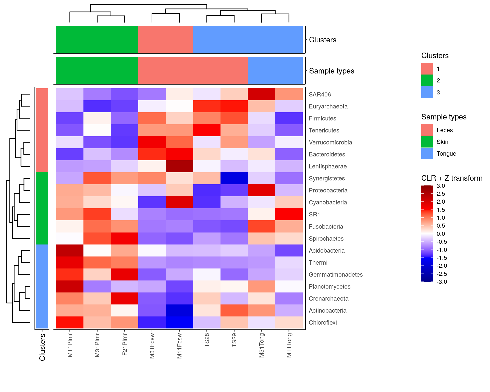
Heatmaps find several other applications in biclustering and multi-assay analyses. These are discussed further in chapters Chapter 14 and Section 21.1.
B.4 Interactive 3D Plots
library(knitr)
knitr::knit_hooks$set(webgl = hook_webgl)In this section we make a 3D version of the earlier PCoA plot (see @ref(quality-control)), with the help of the plotly (Sievert 2020).
# Importing necessary libraries
library(curatedMetagenomicData)
library(dplyr)
library(DT)
library(mia)
library(scater)
# Querying the data
tse <- sampleMetadata %>%
filter(age >= 18) %>% # taking only data of age 18 or above
filter(!is.na(alcohol)) %>% # excluding missing values
returnSamples("relative_abundance")
tse_Genus <- agglomerateByRank(tse, rank="genus")
# Performing PCoA with Bray-Curtis dissimilarity.
tse_Genus <- runMDS(
tse_Genus, # adds reduced dimensionalities to tse_Genus
FUN = vegan::vegdist,
method = "bray",
ncomponents = 3, # calculates three principal coordinates
assay.type = "relative_abundance", # calculates Bray-Curtis from relative abundace
name = "MDS_bray") #name of the PCoA within the tse
e <- attr(reducedDim(tse_Genus, "MDS_bray"), "eig")
rel_eig <- e / sum(e[e > 0])
# Extract the coordinates as a dataframe
coordinates <- as.data.frame(reducedDim(tse_Genus,"MDS_bray"))
head(coordinates)
## V1 V2 V3
## WBE003 -0.5424 -0.4722 0.0162063
## WBE004 -0.5756 -0.4973 0.0006937
## WBE005 -0.5770 -0.5009 -0.0003110
## WBE006 -0.5851 -0.5096 -0.0001041
## WBE007 -0.5564 -0.4775 -0.0015276
## WBE008 -0.5548 -0.4757 -0.0007847
# plot the coordinates using plotly and add the explained variance to the axes
plot_ly(coordinates, x = ~V1, y = ~V2, z = ~V3, color = ~V3) %>%
add_markers() %>%
layout(
scene = list(
xaxis = list(title = paste("PCoA 1 (", round(100 * rel_eig[1], 1), "%)", sep = "")),
yaxis = list(title = paste("PCoA 2 (", round(100 * rel_eig[2], 1), "%)", sep = "")),
zaxis = list(title = paste("PCoA 3 (", round(100 * rel_eig[3], 1), "%)", sep = ""))
)
)